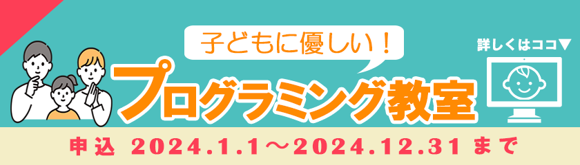
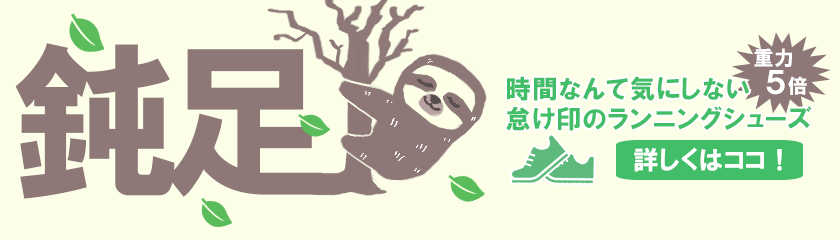
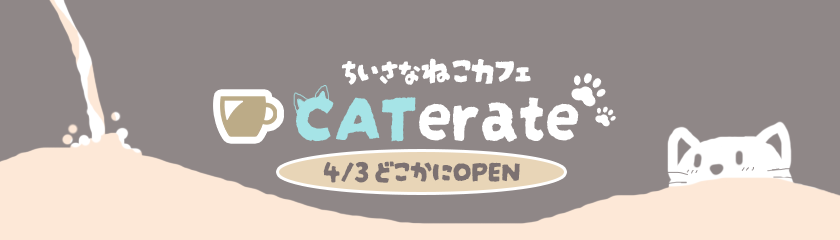
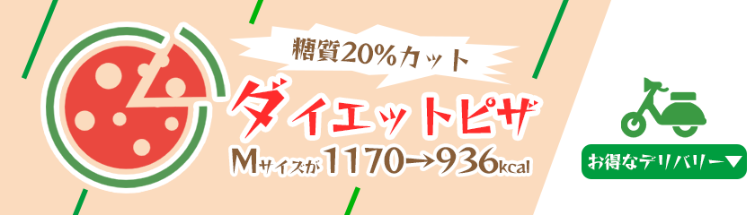

制作したバナーデザインになります
タイトルと簡単な説明を載せております

教育系なので、 真面目さとカジュアルさのバランスを 考えながら全体的に落ち着いた色合いにし 万人が受け入れやすいように作成しました。
クールビズの割引セールなので 涼し気な印象を目指し 青を基調に割引率を強調させるためアクセントになる オレンジを使い、少し文字サイズを大きくしました。

重さを感じさせたかったので、鈍足の文字は太く ゴシック調の字体にし、のんびり出来るという象徴に ナマケモノを添え、鈍足らしいバナーを目指しました。

ブラウンを主に使い、 アイスコーヒーなども イメージさせるためアクセントとして青色を使いました。 可愛らしいフォントで 優しさを表現しました。

ピザの配色を基準にベースをベージュ色にし、名前は 食欲が出る赤色で締めました。糖質カットなので スタイリッシュな感じがでるデザインを心がげました。
ブラウンをメインに使い、 ジャガイモを太陽に見立て 元気な感じや美味しいという勢いを出し、ジャガイモは １個の方がインパクトがあったので 1 つにしました。